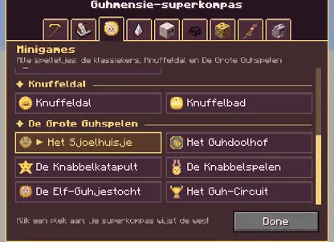
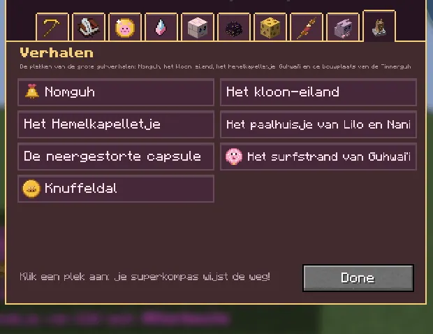

The Guhmension super compass points the way to (almost) every structure, by tab: Adventure, Quests, Minigames, Wonders, Homes, End, Underground, Barbecue, Cosy and Stories.
Het Guhmensie-superkompas wijst de weg naar (bijna) elk bouwwerk, per tab: Avontuur, Quests, Minigames, Wonderen, Wonen, Einde, Ondergrond, Barbecue, Knus en Verhalen.
Guhmension Super CompassGuhmensie-superkompas
Right-click it and choose what to look for: guh caves, quest places, minigames, wonders, villages... Then it points to the nearest one (in the dimension you're in); hold it to see how far. Crafted from a compass, guh crystals and a vads ingot, sold by the vads temmer and the Mika hunter, dropped by Big Mika and found in guh chests. It replaces the old guh cave, challenge, kermis, verstop and king's compasses (old ones still work).Rechtsklik en kies wat je zoekt: guhgrotten, questplekken, minigames, wonderen, dorpen... Dan wijst hij naar de dichtstbijzijnde (in de dimensie waar je bent); houd hem vast om te zien hoe ver. Te maken van een kompas, guhkristallen en een vadsstaaf, te koop bij de vadstemmer en de Mika-jager, van Grote Mika en in guhkisten. Hij vervangt de oude guhgrot-, uitdagings-, kermis-, verstop- en koningskompassen (oude werken nog).
The Guhmension super compass replaces the single-purpose guh compasses: right-click it and pick what to look for, by category (Adventure, Quests, Minigames, Wonders, Homes). The quest compasses (shrine compass, Mika trail compass, cake crumbs) stay as they are.
Het Guhmensie-superkompas vervangt de losse guhkompassen: rechtsklik en kies wat je zoekt, per categorie (Avontuur, Quests, Minigames, Wonderen, Wonen). De questkompassen (heiligdomkompas, Mika-spoorkompas, taartkruimels) blijven gewoon.
The categories are icon tabs on top (Avontuur, Quests, Minigames, Wonderen, Wonen, Einde, Ondergrond, Barbecue, Knus), and Minigames holds every game building under the subheadings Klassiekers, Knuffeldal and De Grote Guhspelen, with a green tick where you've been. There is a tab Verhalen (the story places) and Minigames has a fourth heading, Verhalen.
Zijn de categorieën icoontjestabbladen bovenaan (Avontuur, Quests, Minigames, Wonderen, Wonen, Einde, Ondergrond, Barbecue, Knus), en staat bij Minigames elk spelgebouw onder de kopjes Klassiekers, Knuffeldal en De Grote Guhspelen, met een groen vinkje waar je al was. Is er een tabblad Verhalen (de verhaalplekken) en heeft Minigames een vierde kopje, Verhalen.

The superkompasHet superkompas
The superkompas has a row of icon tabs too (Avontuur, Quests, Minigames, Wonderen, Wonen, Einde, Ondergrond, Barbecue, Knus) with a two-column list of places. Minigames now holds every game, under the subheadings Klassiekers, Knuffeldal and De Grote Guhspelen, with the game's icon and a green tick once you've been there. The place you're heading for is gold.
Het superkompas heeft ook een rij icoontjestabbladen (Avontuur, Quests, Minigames, Wonderen, Wonen, Einde, Ondergrond, Barbecue, Knus) met een lijst van plekken in twee kolommen. Minigames heeft nu alle spellen, onder de kopjes Klassiekers, Knuffeldal en De Grote Guhspelen, met het icoontje van het spel en een groen vinkje als je er al was. De plek waar je heen gaat is goud.
Visit all six new buildings for Guhspelen-ontdekker, and every minigame building for Vahoege wereldreiziger.
Bezoek alle zes nieuwe gebouwen voor Guhspelen-ontdekker, en elk minigamegebouw voor Vahoege wereldreiziger.

The superkompas tab VerhalenHet superkompas-tabblad Verhalen
Everything happens in the Guhmension. The superkompas has a new tab Verhalen (the icon is the Baltoguh-beeldje) that points you to all of them:
Alles gebeurt in de Guhmensie. Het superkompas heeft een nieuw tabblad Verhalen (het icoontje is het Baltoguh-beeldje) dat je naar allemaal de weg wijst:
| PlacePlek | WhereWaar | StoryVerhaal |
|---|---|---|
| Nomguh | in the middle of every Sneeuwguhtoendra (one per tundra)midden in elke Sneeuwguhtoendra (een per toendra) | Baltoguh |
| Het kloon-eilandHet kloon-eiland | a rock island out in the Guhzeeeen rotseiland ver in de Guhzee | Guhtwo |
| Het HemelkapelletjeHet Hemelkapelletje | on a floating islet above guh land; a bit rarer than the other buildingsop een zwevend eilandje boven het guhland; iets zeldzamer dan de andere gebouwen | KnuffelhartKnuffelhart |
| Lilo and Nani's stilt houseHet paalhuisje van Lilo en Nani | on the beach of a Guhwai'i islandaan het strand van een Guhwai'i-eiland | 626-guh |
| The crashed capsuleDe neergestorte capsule | on the top of a Guhwai'i islandboven op een Guhwai'i-eiland | 626-guh |
| The surf beach of Guhwai'iHet surfstrand van Guhwai'i | on the other beach of the same islandaan het andere strand van hetzelfde eiland | surfing & hulasurfen & hula |
| Knuffeldal | every Knuffeldal town now has the Timmerguh's building siteelk Knuffeldal-stadje heeft nu de bouwplaats van de Timmerguh | Timmerguh |
The Minigames tab of the superkompas has a fourth heading, Verhalen, with Nomguh (the sledesprint) and the surf beach. Picking a story place for the first time gives the advancement Er was eens.... Every story place has its own Reisguh, so once you've been there you can travel back in one click.
Het tabblad Minigames van het superkompas heeft een vierde kopje, Verhalen, met Nomguh (de sledesprint) en het surfstrand. De eerste keer dat je een verhaalplek kiest krijg je de vooruitgang Er was eens.... Elke verhaalplek heeft een eigen Reisguh, dus als je er een keer bent geweest reis je met een klik terug.
The tabsDe tabbladen
AdventureAvontuur
Grotten en Mika's: spannend!
Quests
Plekken waar een guh-opdracht begint
Minigames
Alle spelletjes: de klassiekers, Knuffeldal, De Grote Guhspelen en de Guhverhalen
- Klassiekers
- Verstopguhhuis
- Guhkermis
- Vadsig eetfestijn
- Mika-mephal
- Guhdisco
- Guhvisvijver
- Guh Beauty Theater
- Guhracebaan
- Guhgolfbaan
- Knuffeldal
- Knuffeldal
- Knuffelbad
- De Grote Guhspelen
- Het Sjoelhuisje
- Het Guhdoolhof
- De Knabbelkatapult
- De Knabbelspelen
- De Elf-Guhjestocht
- Het Guh-Circuit
- Guhverhalen
- Nomguh
- Het surfstrand van Guhwai'i
WondersWonderen
Grote en zeldzame bezienswaardigheden
HomesWonen
Waar de guhs wonen
EndEinde
Op weg naar het Guheinde. Njeg!
UndergroundOndergrond
Diep onder de Guhmensie, in de gatenkaas. Sssst!
Barbecue
Alles om te barbecueën, van de Guhmensie tot diep in de Barbecuether
CosyKnus
Knusse plekjes: het Knuffeldal, de boerderij, de sterrenwacht, het ballonfestival...
StoriesVerhalen
De plekken van de grote guhverhalen: Nomguh, het kloon-eiland, het Hemelkapelletje, Guhwai'i en de bouwplaats van de Timmerguh